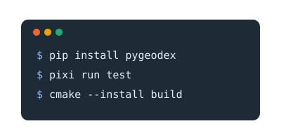
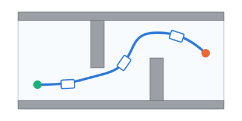
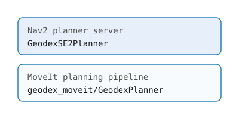
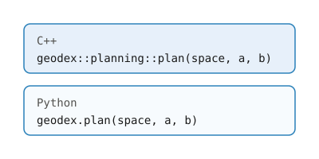

geodex#
geodex is a general-purpose software framework for motion planning on Riemannian manifolds.
We ship ready-to-use manifolds (\(\mathbb{R}^n\), \(\mathbb{S}^n\), \(\mathbb{T}^n\), \(\mathrm{SO}(2)\), \(\mathrm{SO}(3)\), \(\mathrm{SE}(2)\), \(\mathrm{SE}(3)\), and Cartesian products of these), all built from swappable metric, retraction, and sampler policies, along with efficient algorithms for geodesic distance and interpolation.
The core engine of geodex is written purely in C++20 for performance, with first-class Python
support (pip install pygeodex). We also provide integrations with popular motion planning
frameworks (OMPL, VAMP) and robotics stacks (Nav2, MoveIt 2) through ROS 2.

Install geodex with pip, CMake or pixi, and plan a first motion.

Learn the Riemannian geometry behind geodex, its design and its algorithms.

Start from a first manifold and plan minimum-energy and \(\mathrm{SE}(2)\) motions.
Plan manipulation, navigation and whole-body motions for nine built-in robots.

Plan inside Nav2 and MoveIt 2 with the two geodex planner plugins, on ROS 2 Jazzy and Lyrical.

Look up every class and function of the Python module and the C++ headers.
Citing geodex#
If you use geodex in your research, please cite the geodex paper.
@article{kyaw2026geodex,
title = {geodex: A Library for Motion Planning on {Riemannian} Manifolds},
author = {Kyaw, Phone Thiha and Wei, Ben and Samavi, Sepehr and
{Rogel Garcia}, Miguel Angel and Kelly, Jonathan},
journal = {arXiv preprint arXiv:2610.09165},
year = {2026},
url = {https://arxiv.org/abs/2610.09165}
}
geodex implements the methods of the papers below. Please also cite the ones your work uses.
Geometry-Aware Sampling-Based Motion Planning on Riemannian Manifolds
Midpoint geodesic distance and interpolation under a Riemannian metric.
@inproceedings{kyaw2026geometry,
title = {Geometry-Aware Sampling-Based Motion Planning on {Riemannian} Manifolds},
author = {Kyaw, Phone Thiha and Kelly, Jonathan},
booktitle = {Proceedings of the 17th World Symposium on the Algorithmic Foundations
of Robotics (WAFR)},
address = {Oulu, Finland},
month = jun,
year = {2026},
url = {https://arxiv.org/abs/2602.00992}
}
Direct Informed Sampling on Riemannian Manifolds via Loewner Order Lower Bounds
The Loewner lower bounds behind the admissible heuristics and the informed sampling.
@article{kyaw2026loewner,
title = {Direct Informed Sampling on {Riemannian} Manifolds via {Loewner} Order
Lower Bounds},
author = {Kyaw, Phone Thiha and Kelly, Jonathan},
journal = {IEEE Robotics and Automation Letters},
year = {2026},
url = {https://arxiv.org/abs/2606.02879}
}
Greedy Heuristics for Sampling-Based Motion Planning in High-Dimensional State Spaces
The G-RRT* planner.
@article{kyaw2026greedy,
title = {Greedy Heuristics for Sampling-Based Motion Planning in High-Dimensional
State Spaces},
author = {Kyaw, Phone Thiha and Le, Anh Vu and Mohan, Rajesh Elara and
Kelly, Jonathan},
journal = {Autonomous Robots},
year = {2026},
url = {https://arxiv.org/abs/2405.03411}
}